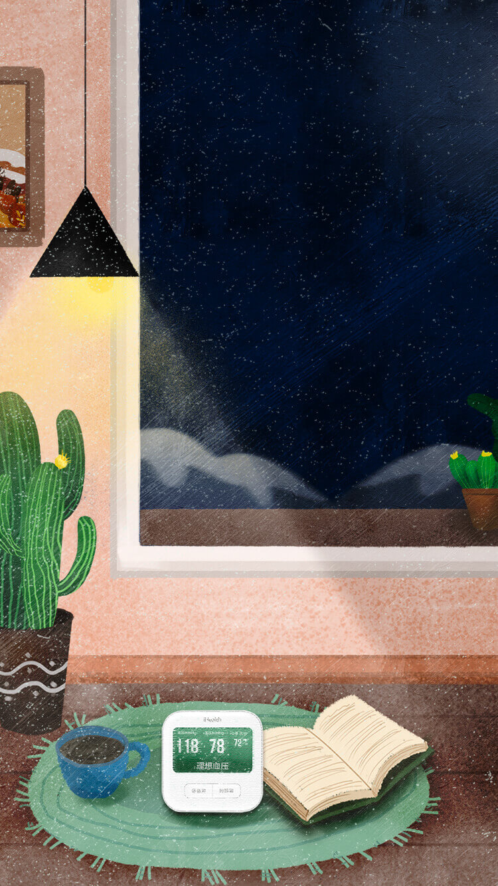
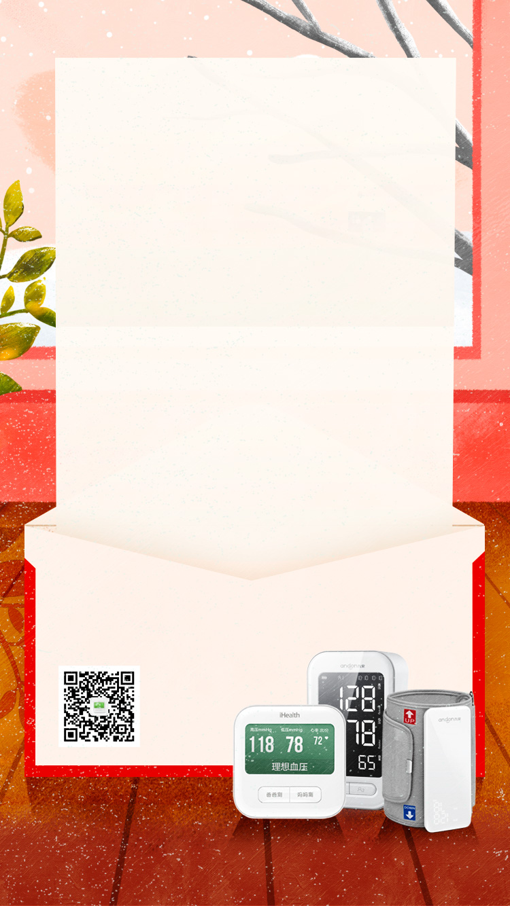

{{info.first_measure_time}}
你第一次使用爱家康APP
测量的血压是 {{info.first_measure_lp}}/{{info.first_measure_hp}} ,
心率是 {{info.first_measure_hr}}
与你的第一次相遇，
是我们守护健康的开始。

2020年,
你用爱家康APP测量{{info.t_measure_times}} 次，
其中，理想血压 {{info.t_health_times}} 次
历史上你用爱家康APP测量{{info.history_measure_times}}次，
其中，理想血压 {{info.history_health_times}} 次
如果“鸭梨山大”，
不如放个大假，
生活还有诗和远方
{{info.highest_date}},
你测出当年最高血压{{info.highest_value}}
{{info.lowest_date}},
你测出当年最低血压{{info.lowest_value}}
{{info.highest_hr_date}},
你测出当年最高心率{{info.highest_hr_value}}
{{info.lowest_hr_date}},
你测出当年最低心率{{info.lowest_hr_value}}
看似不经意的一次测量，
很可能是健康的关键时刻
2020,
你一天中{{info.good_at}}的血压最为理想，
而{{info.bad_at}}血压需要关注
2020{{info.season_good_at}}你的血压最为理想，
而{{info.season_bad_at}}你的血压需要关注
寒来暑往，三餐四季，
拥有“健康自由”，
才是令人向往的生活
你通过爱家康APP把健康状况分享给亲友80次，
共有{{info.friends_count}}位伙伴和你一起在爱家康APP记录健康，在河北省，就有
6988位，其中，你的健康排名是 {{info.t_order}}
位（以测出理想血压的次数排名）。和2020年之前相比，
你的排名上升了{{info.desc}}名。
你的排名下降了{{info.desc}}名。
保持健康从不是你一个人的战斗，不论是目标达成的喜悦，亦或是遇到困难的迷茫，只要你需要，我们随时都在。

2020,你的平均血压是
{{info.t_avg_lp}}/{{info.t_avg_hp}}，心率是{{info.t_avg_hr}}
历史上,你的平均血压是
{{info.history_avg_lp}}/{{info.history_avg_hp}}，心率是{{info.history_avg_hr}}
所以，在2021年，
{{info.t_content}}
新的一年，健康出发！